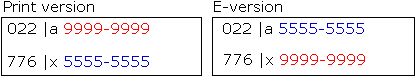
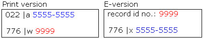
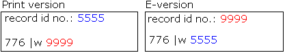
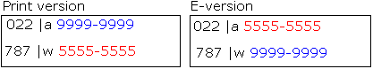
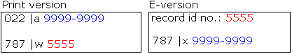

| 020a
to 020z
020z to 020a |
These
two one-way profiles are intended to create reciprocal links between
records for e-books and for the print version, if we have it. Examples:
Naipaul's strangers; Agendas for sustainability |
022a
to 776x
776x to 022a |
These
two one-way profiles are intended to create reciprocal links between
serial records and electronic versions which are cataloged separately.
Once clean-up of old data is complete, one of these profiles will
be removed and reciprocity will be achieved by proper data on both
records. Examples: Latin American newsletters; International political
science abstracts |
| 787w to bib id |
This
one-way profile was created to allow for on-request links between
related resources. To make the links reciprocal the 787 must be added
to both catalog records. Examples: Dissertation abstracts international;
Dictionary of the Scots language |
| 776w to bib id |
This
one-way profile was created to allow for situations where ISSNs and/or
ISBNs are not available for either or both of the catalog records
representing the same content. Examples: Digital lunar orbiter photographic
atlas of the moon; Movimiento natural de la poblacion |
| 773w to bib id |
This one-way profile is intended to create links for parent/child relationships. It was designed specifically for Cotsen material. Example: Aubrey Beardsley to record for St Jamess budget |
| 774w to bib id |
This one-way profile is intended to links for parent/child relationships. It was designed specifically for Cotsen material. Example: |
020a to 776z
776z to 020a |
These two one-way profiles are intended to create reciprocal links between e-books and print books. Example: Aerospace propulsion |
022a to 024a
024a to 022a |
These two one-way profiles are intended to create reciprocal links between serials and electronic versions covered by SFX records. Example: |
Records with the same content in different formats when both have an
ISSN:

NOTE: The 776 fields should contain all other appropriate
subfields in addition to the subfield x.
Records for the same content in different formats when only one has an
ISSN:

NOTE: The 776 fields should contain all other appropriate
subfields in addition to the subfield w or x.
Records for the same content in different formats when neither has an
ISSN/ISBN:

NOTE: The 776 fields should contain all other appropriate
subfields in addition to the subfield w.
Records with a non-specific relationship when both of them have an ISSN:

Records with a non-specific relationship only one of them has an ISSN:

Records with a non-specific relationship when when neither of them has
an ISSN/ISBN: